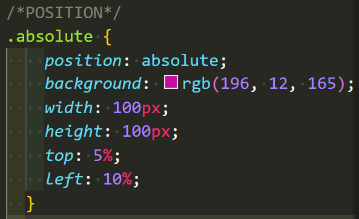

Les différentes positions possible
Position absolute
Pour commencer, on n'utilisera le positionnement absolu que dans les conditions suivantes:Alsacreations 
1) si on sait comment faire pour positionner un élément en absolu par rapport à son parent ou ancêtre positionné (si cela ne vous dit rien, relire les articles indiqué en ressources!);
2) si on a une idée précise des conséquences du positionnement absolu (risque de chevauchement des contenus);
3) si on sait à l'avance quels sont les contenus qui seront ainsi positionnés, et si ces contenus ne risquent pas de prendre de l'ampleur et ainsi de déborder de l'espace défini. Une fois ces précautions bien intégrées, on pourra utiliser le positionnement absolu de manière efficace pour quelques éléments de nos pages web.
Carré rose... en haut à gauche!
Position relative
Pour l'essentiel, le positionnement relatif a deux usages concrets: 1) créer un nouveau référent pour les éléments enfants et descendants positionnés en absolu et 2) décaler légèrement (de quelques pixels, pas plus) un élément par rapport à sa position normale, pour réaliser un effet visuel. Toute autre utilisation, sans être impossible ou forcément incorrecte, est risquée.Alsacreations
Position sticky
Un élément positionné en adhérence est un élément dont la propriété de position calculée vaut sticky. Un tel élément se comporte comme un élément positionné de façon relative jusqu'à ce que son bloc englobant dépasse un seuil donné (par exemple fourni par la valeur de top) au sein du conteneur puis il se comporte ensuite comme un élément fixe jusqu'à atteindre le bord opposé du bloc englobant.developer.mozilla
Position fixed
À n'utiliser qu'en connaissance de cause, avec beaucoup de précautions et en testant sur différentes configurations (et surtout différentes résolutions d'écran). On n'utilise que très rarement le positionnement fixe. Nous y sommes. Avec un peu de chance, vous y voyez maintenant plus clair. Si ce n'est malheureusement pas le cas, je vous invite à lire ou relire les articles indiqués comme ressources, et à mener vos propres essais pour vous familiariser avec le comportement des différentes propriétés. Courage!Alsacreations